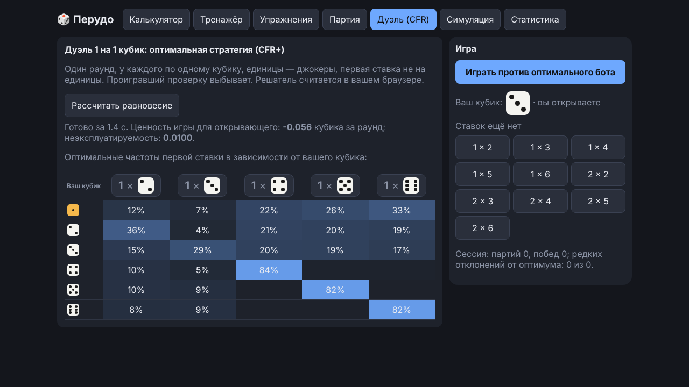
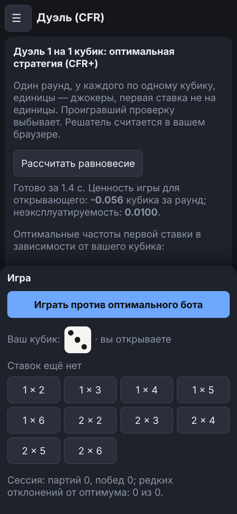
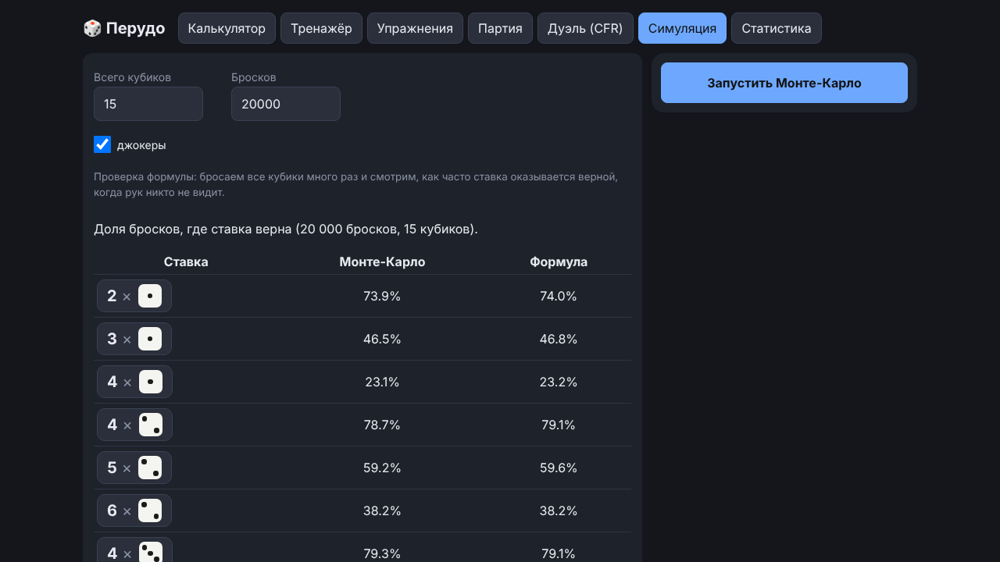
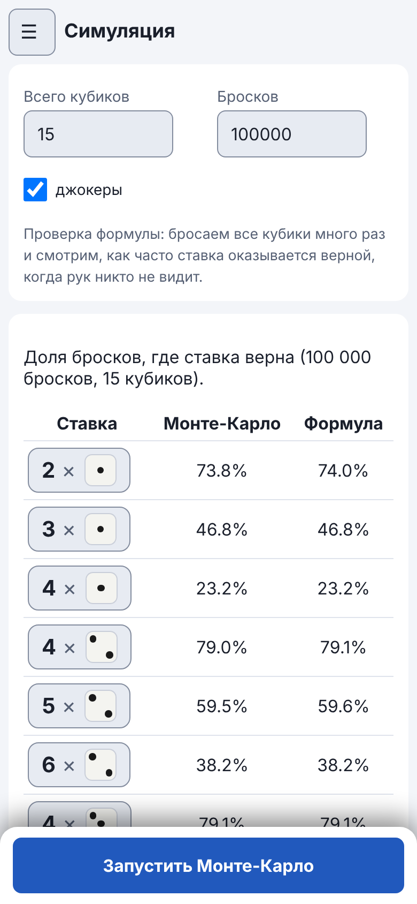

Руководство / Дуэль и Симуляция
Дуэль и Симуляция
Два раздела для тех, кому хочется глубже: игра один на один против «почти идеального» бота и проверка формул на практике.
Дуэль (CFR)
Один раунд один на один: у каждого по одному кубику, единицы — джокеры, первая ставка не на единицы, проигравший проверку выбывает. Против вас играет бот, стратегию которого рассчитал алгоритм CFR+ (минимизация сожаления) прямо в вашем браузере.
- «Рассчитать равновесие» — посчитать стратегию и посмотреть, с какой частотой бот открывает торги разными ставками при каждом своём кубике.
- «Играть против оптимального бота» — сыграть раунд: вы выбираете ставку или «Не верю!». Если стратегия ещё не посчитана, расчёт запустится сам.
- Под полем игры видны счёт «партий / побед» за сессию и число ваших редких отклонений от оптимальной стратегии.

Зачем это нужно. На одном кубике хорошо видно, что даже «оптимальный» игрок иногда блефует, а проверять каждую ставку подряд — тоже ошибка. Стратегия считается приближённо, поэтому мы говорим «близкая к оптимальной».

На телефоне игра идёт в панели у нижнего края экрана, на широком экране — справа от таблицы равновесия.
Симуляция
Проверка формул на практике. Задайте число кубиков (по умолчанию 15), количество бросков (100 000) и джокеры, нажмите «Запустить Монте-Карло». Компьютер бросает кубики много раз и показывает, как часто ставка оказывается верной, когда рук никто не видит.
Результат должен совпадать со столбцом «Формула», то есть с цифрами Калькулятора. Это способ убедиться, что приложению можно доверять.

